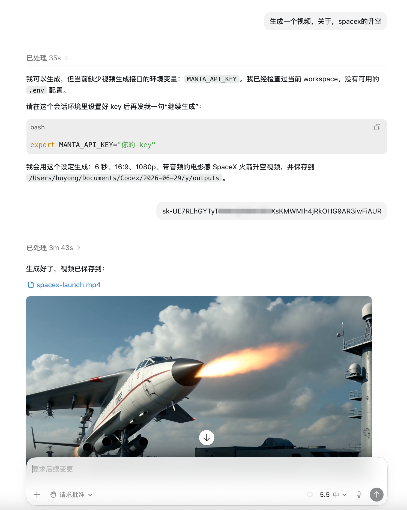
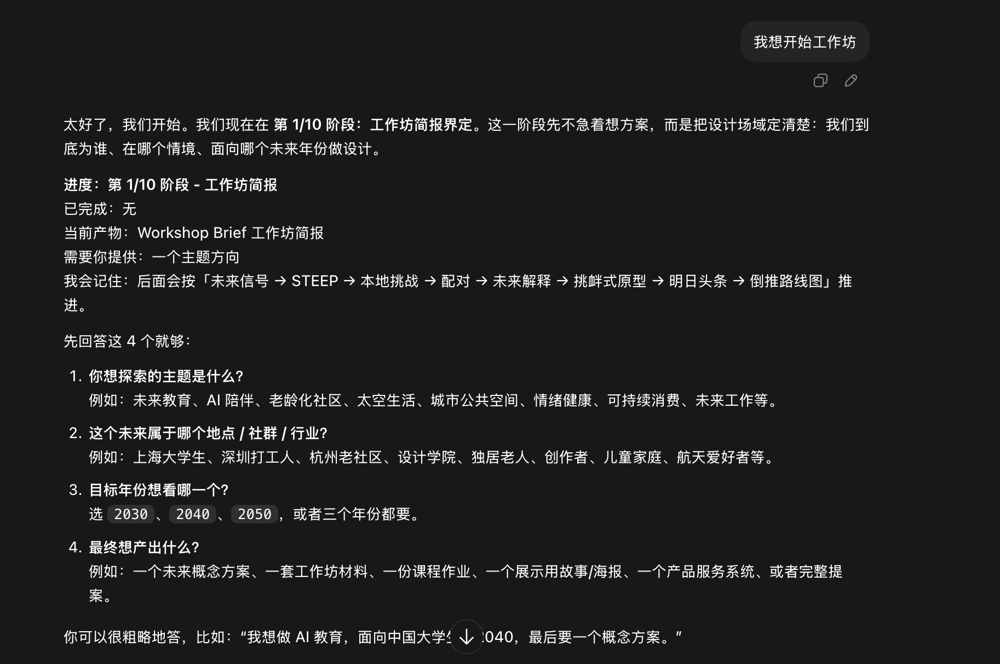
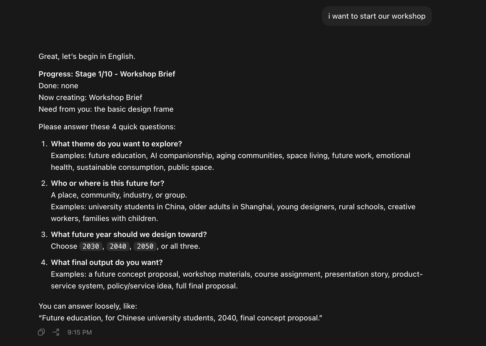
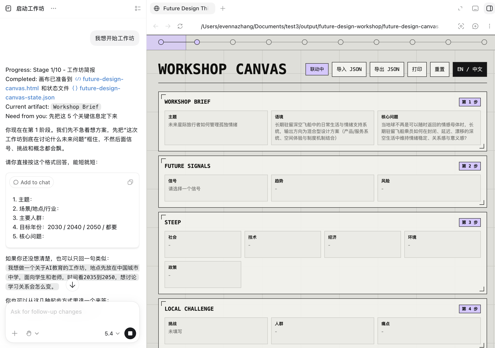
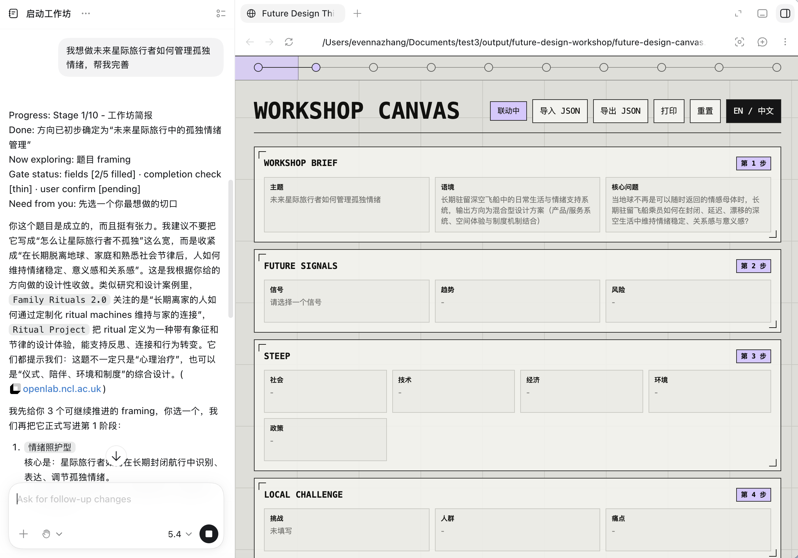
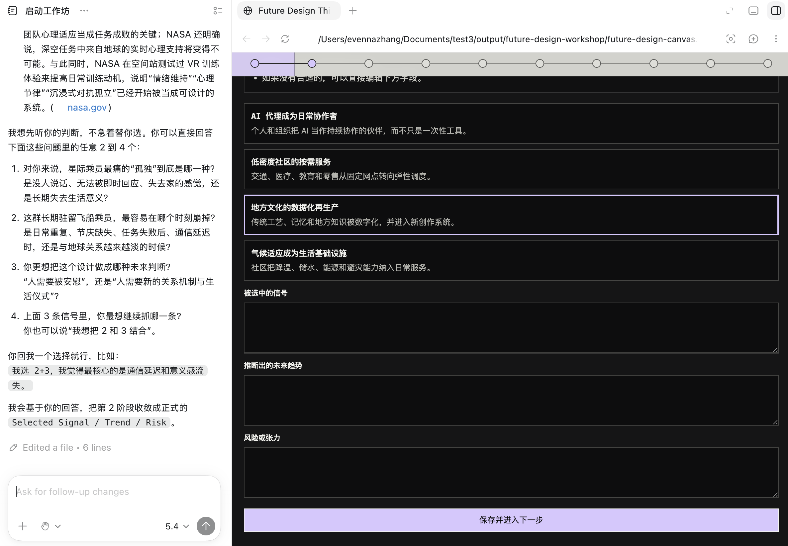

工具使用
环境验证
VERIFY YOUR SETUP IS WORKING
完成 Codex 安装、API 配置和 Skill 安装后，通过以下测试确认环境已正确配置，可以正常使用。
1
验证视频生成 Skill
在 Codex 中尝试生成一段视频，确认 generate-multimodal-media Skill 和 MANTA_API_KEY 配置正常：
发送生成请求
在 Codex 对话框中输入视频生成指令，例如：
生成一个视频，关于，spacex的升空
Codex 会调用 Seedance 2.0 模型生成视频，整个过程大约需要 3-5 分钟。生成完成后会返回视频文件：

通过标准：
视频文件成功生成并可预览。如果提示缺少 MANTA_API_KEY，请按 Skill 安装页面的步骤配置环境变量。
2
验证 Future Design Skill
在 Codex 中启动未来设计工作坊，确认 future-design Skill 配置正常：
发送启动请求
在 Codex 对话框中输入启动工作坊的指令，例如：
我想开始工作坊
Codex 会加载 Future Design Skill，进入第 1/10 阶段「工作坊简报界定」，并引导你回答主题、人群、目标年份与最终产出：


通过标准：
Skill 成功加载并返回 10 阶段工作坊流程，进入第 1 阶段引导提问。如果没有进入工作坊流程，请按 Skill 安装页面的步骤重新安装 future-design Skill。
3
体验完整工作坊流程
Skill 验证通过后，就可以正式开始用它跑一场完整的工作坊。整个过程是「和 AI 自然对话 + 实时预览网页画布」双栏协作，下面是实际使用流程：
启动 Skill，点击即可预览画布
发送「我想开始工作坊」后，Skill 会生成 future-design-canvas.html。点击对话里 HTML 文件名旁边的链接，右侧就会打开工作坊画布预览。

讨论中，阶段成果实时更新到网页
随着你和 AI 的讨论推进，每个阶段的成果（主题、语境、核心问题、信号、趋势……）会实时写入右侧画布，与对话保持「联动」。

下滑到黑色区域可手动修改内容
把右侧画布向下滚动到黑色编辑区，可以直接手动修改、补充每个字段的内容，再点「保存并进入下一步」。

使用要点：
自由地和 AI 交谈来完成方案，Skill 会一步步指引你走完 10 个阶段。任何问题——补内容、改方向、翻译、导出——都可以用自然语言直接让 AI 帮你解决。